Pag 01 · El juego
Pedalea el valle
Juega EnCicla es una juego arcade en pixel art y 2D. Recorres el mapa real del Valle de Aburrá con ciclorrutas, metro, tranvía de Ayacucho, Metrocable, semáforos y peatones, y vives cada oficio del sistema en turnos cortos de pocos minutos.
Se juega con un dedo, la dificultad sube poco a poco y está pensado para todas las edades: de los niños a los abuelos. Cada turno trae una novedad del día:
- Aguacero paisa
- Día sin carro
- Hora pico
- Partido en el Atanasio
- Feria de las Flores
- Ciclovía
Pag 02 · Escalafón EnCicla
Del usuario al supervisor
11 oficios con sus turnos reales
Gana estrellas en cada turno para abrir el siguiente oficio. Cada uno se juega distinto: conducción, puzzle, estrategia o arcade.
- Ciudadanía
UsuarioToma una bici y recorre el valle por las ciclorrutas. Devuélvela antes de 60 minutos.
Vista cenital · mundo libre
Cómo se juega
- Arrastra el dedo para pedalear (o usa las flechas).
- Sigue la línea punteada y la flecha amarilla.
- Recoge hojas verdes y postales de la ciudad.
- Operación de estación
Anfitrión
Atiende la ventanilla: presta, recibe, revisa tarjetas y organiza las bicis.
Vista panorámica · arcade
Cómo se juega
- Toca al usuario de la fila.
- Revisa la tarjeta y elige una bici con luz verde.
- Las bicis dañadas van al taller (caja roja).
- Taller
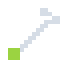
MecánicoRepara bicis contra el reloj: cada falla tiene su herramienta.
Vista lateral · puzzle de rapidez
Cómo se juega
- Mira la falla que parpadea en la bici.
- Toca la herramienta del mismo color.
- Con la bomba, toca ¡YA! en la zona verde.
- Taller
Bodega
Clasifica los repuestos y carga las bicis nuevas al camión.
Vista lateral · organización rápida
Cómo se juega
- Espera que la pieza llegue al escáner.
- Toca la caja de su mismo color.
- Llena el camión con 10 bicis nuevas.
- Operación de campo
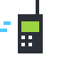
ApoyoRecorre tu zona: abre estaciones automáticas, haz relevos y verifica estaciones.
Vista cenital · estrategia
Cómo se juega
- Cada número en el mapa es una tarea.
- Tú eliges el orden: ¡ojo con las horas límite!
- Al llegar, resuelve la tarea.
- Operación de campo
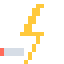
TécnicoLas estaciones se dañan: llega rápido y repáralas para mantener la operatividad.
Vista cenital · acción
Cómo se juega
- Las estaciones con marca roja están dañadas.
- Llega y repara: cables o tótem.
- Mantén la operatividad alta.
- Operación de campo
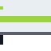
BalanceManeja el camión: lleva bicis a estaciones vacías y recoge de las llenas.
Vista cenital · conducción
Cómo se juega
- Monitoreo te envía órdenes numeradas.
- Conduce por las vías: el camión no cabe en las ciclorrutas.
- Pasa por la bodega para cargar o descargar.
- Centro de control
Monitoreo
Desde la sala de control, envía camiones para que ninguna estación quede vacía o llena.
Vista general · estrategia
Cómo se juega
- Toca una estación para ver sus bicis.
- Envía un camión: llevar o recoger.
- Antes del cierre, regresa los camiones vacíos a la bodega.
- Coordinación
Supervisor
Abre y cierra el sistema, asigna al personal y resuelve todo lo que pase en el día.
Todas las vistas
Cómo se juega
- Asigna cada anfitrión a su zona.
- Atiende los avisos: viaja y resuélvelos.
- En la bodega puedes tomar el camión.
- Multijugador
Carrera
Carrera de postales: pasa por 4 lugares del valle en orden y llega primero a la estación de meta. Juega contra un bot (3 niveles) o contra un amigo en otro celular.
Vista cenital · competitivo
¿Cómo se conecta con un amigo?
- Uno crea la sala y comparte el código (por WhatsApp o copiando el texto).
- El otro pega el código y devuelve su respuesta.
- Los dos celulares se conectan directo, sin servidor del juego. En la misma red Wi-Fi funciona incluso sin internet.
Pag 03 · Galería
Así se ve
Desliza para ver más · toca una imagen para ampliarla

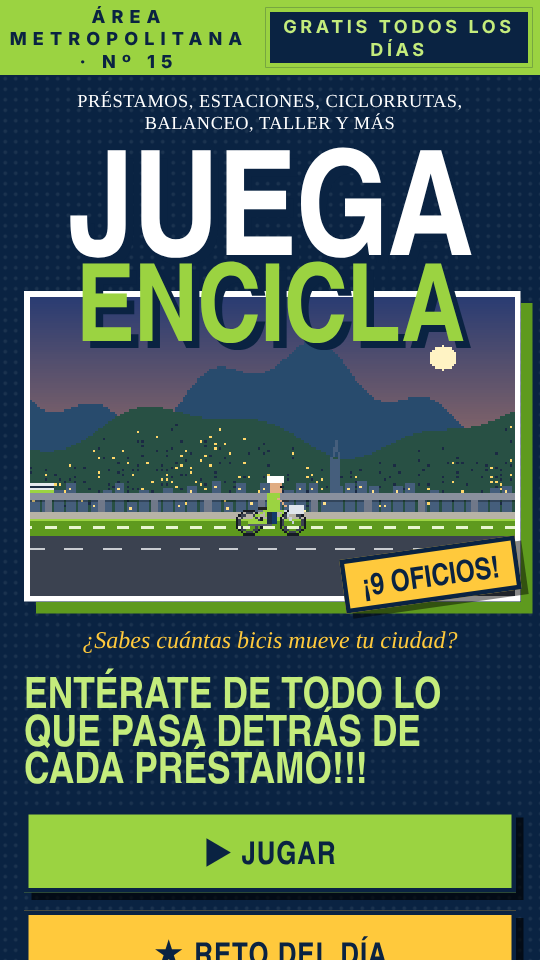

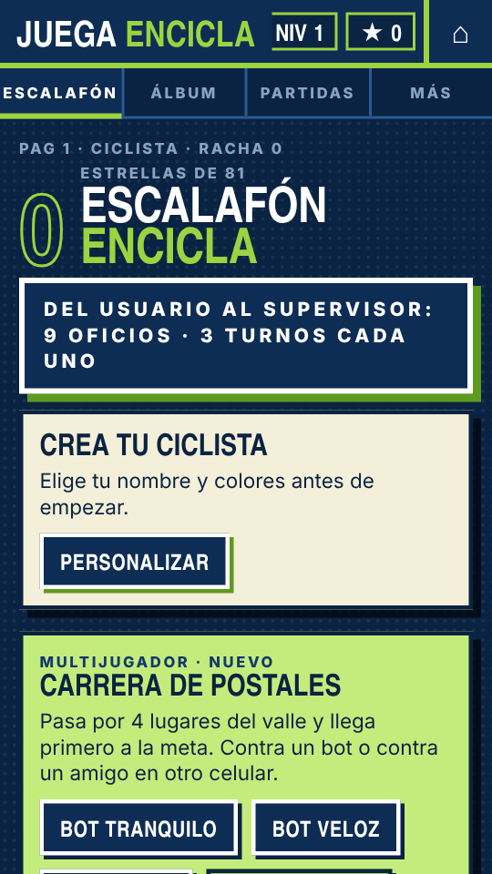

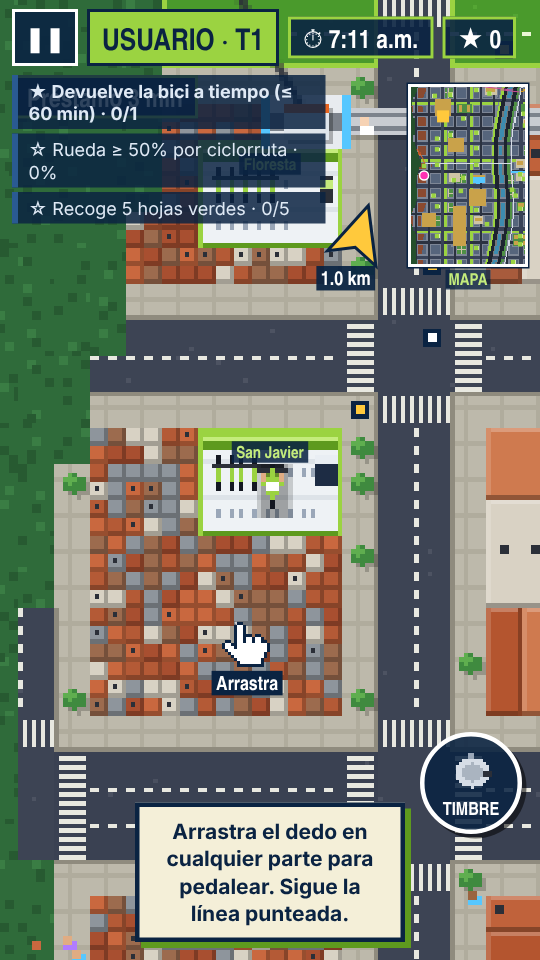

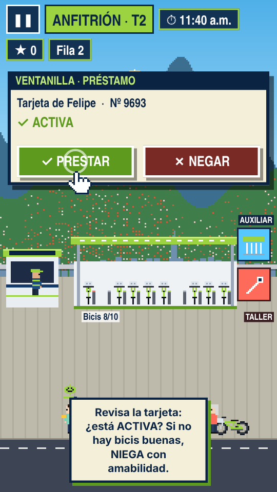

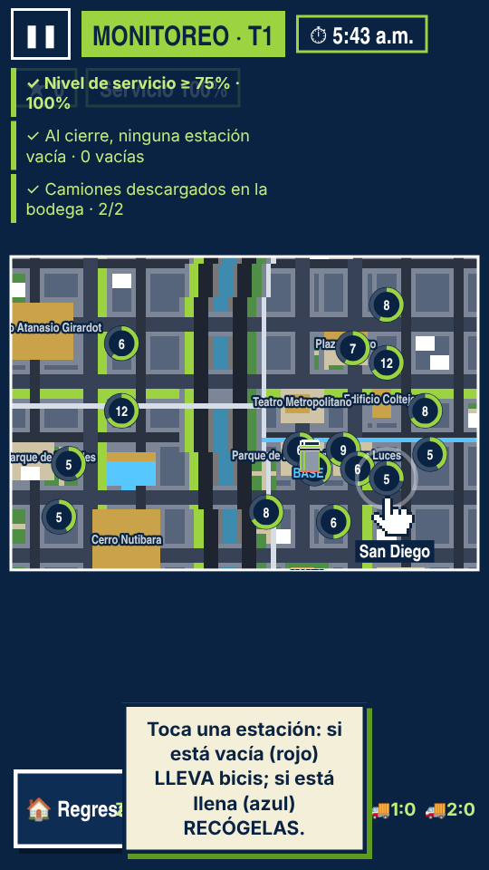

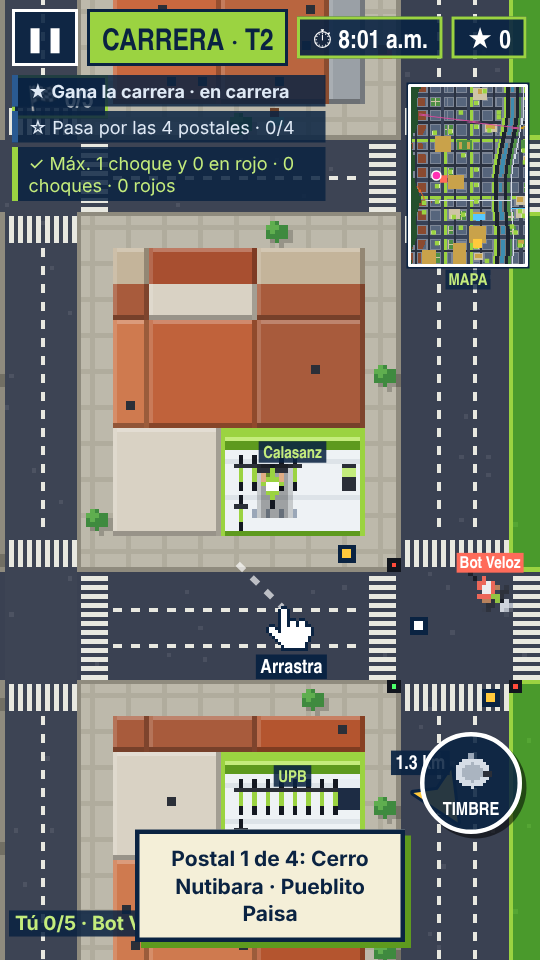
Pag 04 · Llévalo contigo
Juega donde sea
En el navegador
Funciona en celulares, tabletas y computadores. Después de abrirlo una vez, sigue funcionando sin internet.
- Toca «Jugar ahora».
- En Chrome puedes instalarlo desde el menú ⋮ → «Instalar app».
Android
- Descarga el archivo JuegaEnCicla.apk.
- Ábrelo. Si Android lo pide, permite «Instalar apps desconocidas» para tu navegador.
- Búscalo en tus apps como Juega EnCicla.
Muy pronto también en Google Play.
⇩ Descargar APKiPhone y iPad
- Abre el juego en Safari con el botón «Jugar ahora».
- Toca Compartir (el cuadrado con la flecha hacia arriba).
- Elige «Añadir a pantalla de inicio» y toca «Añadir».
- Ábrelo desde tu pantalla de inicio: funciona sin internet.
Pag 05 · Bici pública
Apoya la bici pública
EnCicla es el sistema de bicicletas públicas gratuito del Área Metropolitana del Valle de Aburrá. Funciona gracias a quienes la usan bien y a quienes la mantienen funcionando cada día. Úsala, cuídala y compártela:
- Usa casco y respeta los semáforos y a los peatones.
- Prefiere la ciclorruta.
- Devuelve la bici a tiempo en cualquier estación.
Estamos preparando una forma sencilla de apoyar. Muy pronto la encontrarás aquí.